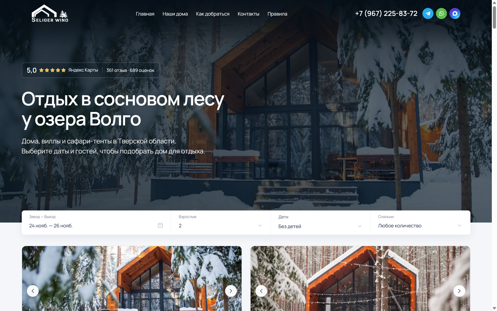
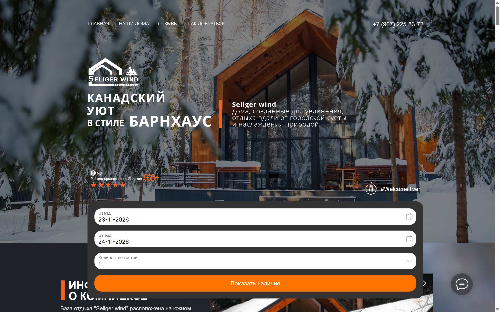
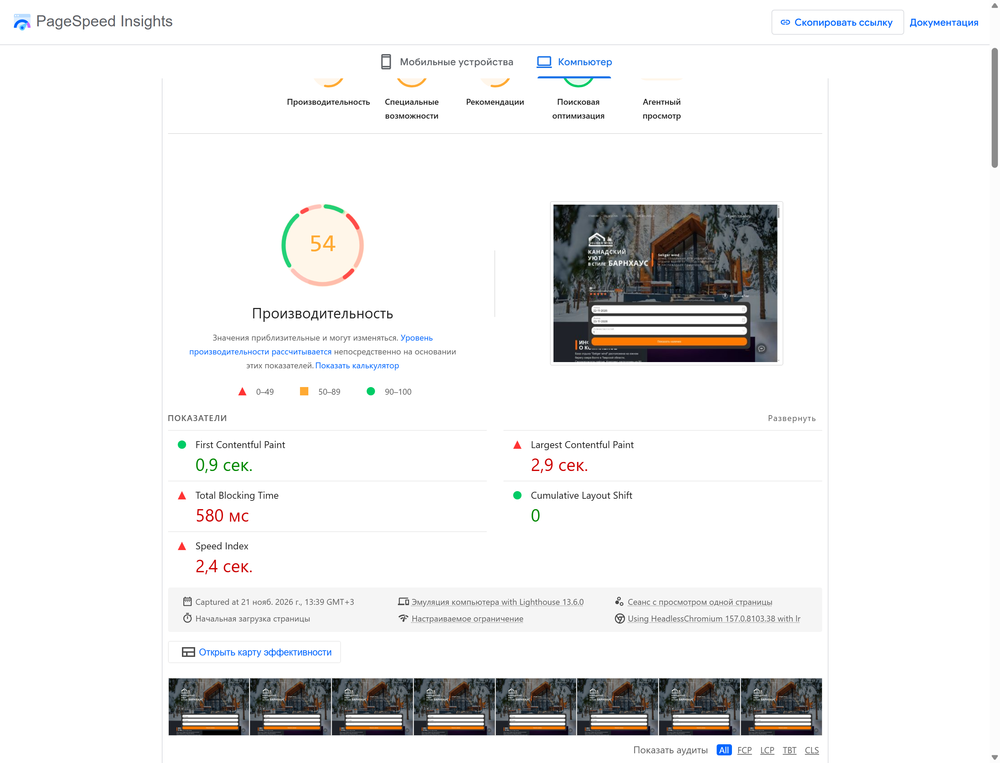
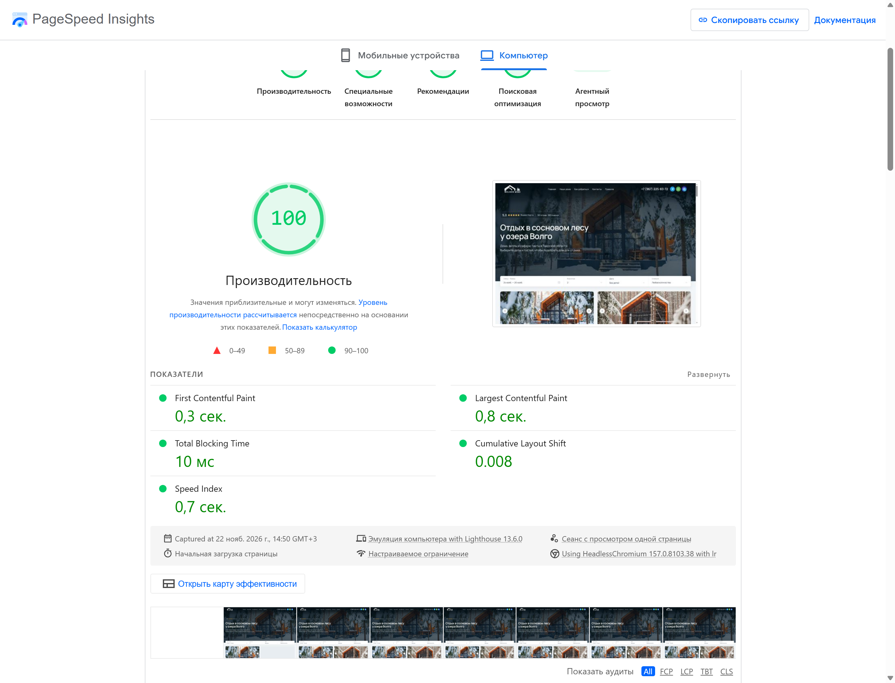

Проблема
Первый экран описывал атмосферу отдыха. Форма Bnovo занимала несколько строк; даты заезда и выезда выбирались отдельно.
Передвиньте разделитель, чтобы сравнить первый экран.


ДОПОСЛЕПервый экран описывал атмосферу отдыха. Форма Bnovo занимала несколько строк; даты заезда и выезда выбирались отдельно.
Указали место и типы размещения. Собрали даты, гостей и спальни в одном блоке рядом с каталогом.
Гость быстрее понимает предложение и может перейти к выбору дома с первого экрана.
Два действия в нижнем меню: связаться с администратором и построить маршрут.
Гость открывает контакты из нижнего меню, не возвращаясь к началу страницы и не разыскивая номер в футере.
Перед запуском нужно указать настоящие ссылки Telegram, WhatsApp и MAX. Сейчас часть ссылок ещё не подключена.
PageSpeed: 54 / 100
PageSpeed: 100 / 100
Время по LCP — появление крупнейшего видимого элемента. Это не время полной загрузки всех фото и видео.


Большие изображения и длительные задачи замедляли появление контента. На телефоне LCP в исходном отчёте — 22,7 секунды.
Уменьшили фотографии и превью, добавили мобильные версии изображений, отложили второстепенные загрузки. Вес первого фото для телефона: 1,38 МБ → 133 КБ.
Телефон: 91 / 100, LCP 3,2 с. Компьютер: 100 / 100, LCP 0,8 с. SEO — 100 / 100, агентный просмотр — 2 / 2.
Источники — отчёты PageSpeed по ссылкам на скриншотах. Это лабораторные проверки в разные даты, а не измерение скорости у всех посетителей.
Цена, питание, предоплата, спальни и кровати собраны в карточке. Это сокращает переходы между описаниями и помогает сравнить подходящие дома до оформления брони.
В замерах PageSpeed LCP на компьютере снизился с 2,9 до 0,8 с, на телефоне — с 22,7 до 3,2 с. Меньше ожидания до знакомства с предложением и выбора дома.
Контакты доступны из нижнего меню на телефоне. В нужных разделах есть кнопки для выбора дома и звонка. Гостю не приходится искать номер или возвращаться к началу страницы.
Быстрая загрузка, сравнение условий в карточках и доступные контакты упрощают путь от выбора дома до обращения. Ожидаемый эффект — больше переходов к бронированию и меньше вопросов об основных условиях проживания.
Рост заявок пока не измерен. После подключения актуальных цен и наличия из Bnovo результат нужно оценить по завершённым бронированиям и обращениям при сопоставимом трафике.